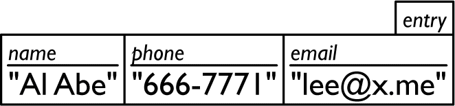
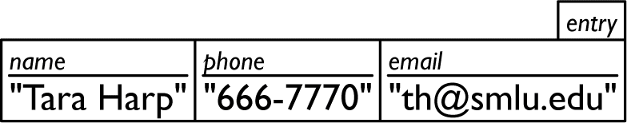
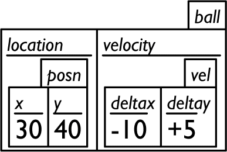
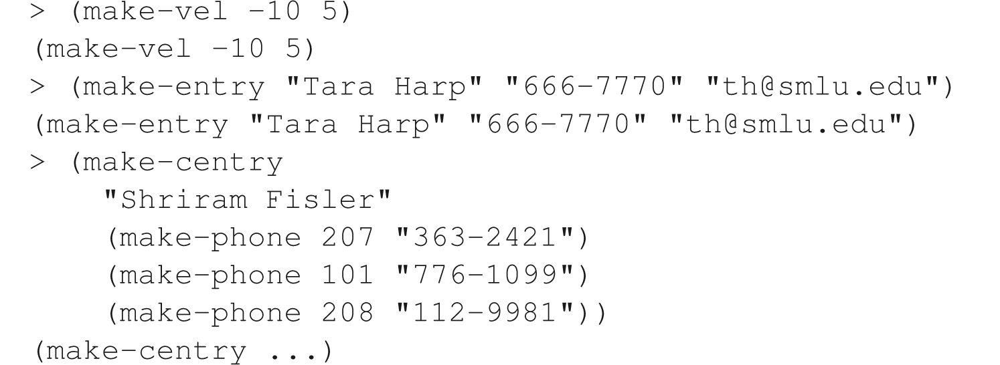

5.5 Computing with Structures
Structure types generalize Cartesian points in two ways. First, a structure type may specify an arbitrary number of fields: zero, one, two, three, and so forth. Second, structure types name fields, they don’t number them. This helps programmers read code because it is much easier to remember that a family name is available in a field called last-name than in the 7th field.
Most programming languages also support structure-like data that use numeric field names.
In the same spirit, computing with structure instances generalizes the manipulation of Cartesian points. To appreciate this idea, let us first look at a diagrammatic way to think about structure instances as lockboxes with as many compartments as there are fields. Here is a representation of
(definepl(make-entry"Al Abe""666-7771""lee@x.me"))
as such a diagram:

The box’s italicized label identifies it as an instance of a specific structure type; each compartment is labeled, too. Here is another instance:
(make-entry "Tara Harp" "666-7770" "th@smlu.edu")
corresponds to a similar box diagram, though the content differs:

Not surprisingly, nested structure instances have a diagram of boxes nested in boxes. Thus, ball1 from above is equivalent to this diagram:

In this case, the outer box contains two boxes, one per field.
Exercise 69. Draw box representations for the solution of exercise 65. 
In the context of this imagery, a selector is like a key. It opens a specific compartment for a certain kind of box and thus enables the holder to extract its content. Hence, applying entry-name to pl from above yields a string:
> (entry-name pl)
"Al Abe"
But entry-name applied to a posn structure signals an error:
> (entry-name (make-posn 42 5))
entry-name:expects an entry, given (posn 42 5)
If a compartment contains a box, it might be necessary to use two selectors in a row to get to the desired number:
> (ball-velocity ball1)
(make-vel -10 5)
Applying ball-velocity to ball1 extracts the value of the velocity field, which is an instance of vel. To get to the velocity along the x axis, we apply a selector to the result of the first selection:
> (vel-deltax (ball-velocity ball1))
-10
Since the inner expression extracts the velocity from ball1, the outer expression extracts the value of the deltax field, which in this case is -10.
The interactions also show that structure instances are values. DrRacket prints them exactly as entered, just like for plain values such as numbers:

Stop! Try this last interaction at home, so you see the proper result.
Generally speaking, a structure type definition not only creates new functions and new ways to create values, but it also adds new laws of computation to DrRacket’s knowledge. These laws generalize those for posn structures in chapter 5.2, and they are best understood by example.
When DrRacket encounters a structure type definition with two fields,
(define-struct ball [location velocity])
it introduces two laws, one per selector:
(ball-location (make-ball l0 v0)) == l0
(ball-velocity (make-ball l0 v0)) == v0
For different structure type definitions, it introduces analogous laws. Thus,
(define-struct vel [deltax deltay])
DrRacket adds these two laws to its knowledge:
(vel-deltax (make-vel dx0 dy0)) == dx0
(vel-deltay (make-vel dx0 dy0)) == dy0
Using these laws, we can now explain the interaction from above:
(vel-deltax (ball-velocity ball1))
== ; DrRacket replaces ball1 with its value
(vel-deltax
(ball-velocity
(make-ball (make-posn 30 40) (make-vel -10 5))))
== ; DrRacket uses the law for ball-velocity
(vel-deltax (make-vel -10 5))
== ; DrRacket uses the law for vel-deltax
-10
Exercise 70. Spell out the laws for these structure type definitions:
(define-struct centry [name home office cell])
(define-struct phone [area number])
Use DrRacket’s stepper to confirm 101 as the value of this expression:
(phone-area
(centry-office
(make-centry "Shriram Fisler"
(make-phone 207 "363-2421")
(make-phone 101 "776-1099")
(make-phone 208 "112-9981"))))
Predicates are the last idea that we must discuss to understand structure type definitions. As mentioned, every structure type definition introduces one new predicate. DrRacket uses these predicates to discover whether a selector is applied to the proper kind of value; the next chapter explains this idea in detail. Here we just want to convey that these predicates are just like the predicates from “arithmetic.” While number? recognizes numbers and string? recognizes strings, predicates such as posn? and entry? recognize posn structures and entry structures. We can confirm our ideas of how they work with experiments in the interactions area. Assume that the definitions area contains these definitions:
(define ap (make-posn 7 0))
(define pl (make-entry "Al Abe" "666-7771" "lee@x.me"))
If posn? is a predicate that distinguishes posns from all other values, we should expect that it yields #false for numbers and #true for ap:
> (posn? ap)
#true
> (posn? 42)
#false
> (posn? #true)
#false
> (posn? (make-posn 3 4))
#true
Similarly, entry? distinguishes entry structures from all other values:
> (entry? pl)
#true
> (entry? 42)
#false
> (entry? #true)
#false
In general, a predicate recognizes exactly those values constructed with a constructor of the same name. Intermezzo 1 explains this law in detail, and it also collects the laws of computing for BSL in one place.
Exercise 71. Place the following into DrRacket’s definitions area:
; distances in terms of pixels:
(define HEIGHT 200)
(define MIDDLE (quotient HEIGHT 2))
(define WIDTH 400)
(define CENTER (quotient WIDTH 2))
(define-struct game [left-player right-player ball])
(define game0
(make-game MIDDLE MIDDLE (make-posn CENTER CENTER)))
Click RUN and evaluate the following expressions:
(game-ball game0)
(posn? (game-ball game0))
(game-left-player game0)
Explain the results with step-by-step computations. Double-check your computations with DrRacket’s stepper.